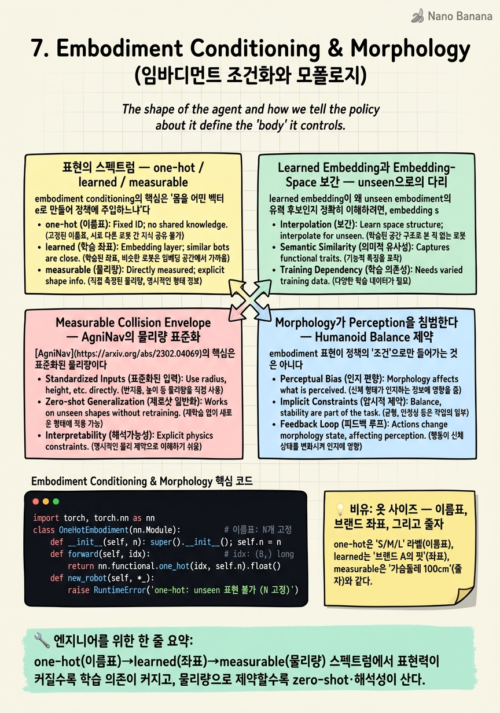

Embodiment Conditioning & Morphology

🎯 학습 목표
- embodiment를 '학습된 벡터'로 볼 때와 '측정 가능한 물리량'으로 볼 때의 trade-off를 안다
- AgniNav의 collision-envelope conditioning이 zero-shot 배치에 유리한 이유를 설명한다
- humanoid의 balance 제약이 perception·policy에 미치는 영향을 이해한다
- learnable embedding이 embedding space 보간으로 일반화하는 아이디어를 설명한다
- unseen embodiment zero-shot이 왜 아직 미해결인지 진단할 수 있다
Chapter 5·6에서 우리는 COMPASS가 embodiment를 one-hot 벡터로 표현하고, 그 조건 아래에서 하나의 generalist가 서로 다른 몸을 구분한다는 것을 봤다. 그런데 one-hot은 근본적으로 '이름표'다. 길이 N one-hot은 N개의 미리 정해진 embodiment에 각각 하나의 축을 배정할 뿐, 그 몸이 얼마나 큰지·얼마나 넓은지·어떤 morphology 제약을 갖는지에 대한 어떤 물리 정보도 담지 않는다. 이 챕터는 바로 그 표현(representation) 자체를 해부한다 — embodiment를 무엇으로 인코딩할 것인가라는, cross-embodiment의 가장 근본적인 설계 질문이다.
표현의 스펙트럼은 세 단계로 놓인다. one-hot(이름표) → learned embedding(학습된 좌표) → measurable physical quantity(측정 가능한 물리량). one-hot은 소수의 이질적 플랫폼에 간결하고 효율적이지만 unseen embodiment로 확장이 불가능하다. learned embedding은 embedding space의 보간을 통해 새로운 몸으로 일반화할 가능성을 열지만 — COMPASS조차 이 zero-shot을 future work로 남겼다. 그리고 2026년의 최전선은 세 번째 축, 즉 embodiment를 collision-relevant height·footprint 같은 '측정 가능한 물리량'으로 표준화하는 AgniNav 계열이다 — 학습된 벡터가 아니라 자로 잰 숫자로 몸을 표현하면 해석 가능하고 retraining 없이 새 로봇에 즉시 배치된다.
이 챕터의 관통 질문은 하나다. embodiment를 '학습된 벡터'로 볼 것인가, '측정 가능한 물리량'으로 볼 것인가. 전자는 표현력이 크지만 unseen으로의 일반화가 취약하고 해석이 어렵다. 후자는 표현력을 물리 파라미터로 제한하는 대신 zero-shot 배치와 해석가능성에서 앞선다. 여기에 humanoid의 balance 제약처럼 morphology가 perception과 정책에 직접 개입하는 사례(FocusNav)를 더해, '몸을 어떻게 인코딩하는가'가 왜 cross-embodiment 일반화의 병목인지를 규명한다.
핵심 내용
표현의 스펙트럼 — one-hot / learned / measurable
embodiment conditioning의 핵심은 '몸을 어떤 벡터 \(e\)로 만들어 정책에 주입하느냐'다. 세 가지 대표 방식이 명확히 구분된다.
One-hot(이름표). 길이 \(N\)(\(N\)=embodiment 수) 벡터로, \(i\)번째 몸은 \(e_i = [0,\dots,1,\dots,0]\)이다. COMPASS의 기본 선택으로, robot이 적고(\(N\)이 작고) 서로 크게 다를 때 가장 효율적이다. 학습이 안정적이고 embodiment 간 간섭이 없다(모든 one-hot은 서로 직교). 그러나 치명적 한계는 \(N\)이 고정이라는 점 — 새 몸 \(N{+}1\)은 새 축이 없어 표현조차 불가능하다. one-hot 공간에는 '사이(between)'가 없어 보간도 무의미하다.
Learned embedding(학습된 좌표). embodiment id를 nn.Embedding으로 연속 벡터 \(e \in \mathbb{R}^d\)에 매핑하고, 이 벡터를 정책과 함께 end-to-end 학습한다. 학습이 끝나면 비슷하게 움직이는 몸끼리 embedding space에서 가까워진다 — 여기서 결정적 가능성이 열린다. 두 known embodiment의 embedding을 보간(\(\alpha e_A + (1-\alpha) e_B\))하면 그 '사이'의 몸에 해당하는 정책을 얻을 수 있다는 아이디어다. 이것이 learned embedding이 unseen embodiment 일반화의 후보인 이유다. 다만 COMPASS는 이 zero-shot을 실증하지 않고 future work로 남겼다 — 보간이 실제로 유효한 정책을 낳는지는 embedding space가 얼마나 매끄러운지(smooth)에 달려 있고, 이는 보장되지 않는다.
Measurable physical quantity(측정 가능한 물리량). embedding을 학습하는 대신, 몸을 자로 잰 물리 파라미터로 직접 인코딩한다. AgniNav의 4-parameter collision envelope(height·front length·rear length·half width)이 대표다. 이 표현의 미덕은 새 로봇이 와도 학습이 필요 없다 — 그냥 치수를 재서 넣으면 된다. embedding처럼 데이터에서 배우는 게 아니라 물리에서 읽어오므로 unseen에 즉시 대응하고, 각 축의 의미가 명확해 해석 가능하다.
| 표현 | 무엇을 담나 | unseen 대응 | 해석성 | 적합 상황 |
|---|---|---|---|---|
| one-hot | 이름표(id) | 불가(\(N\) 고정) | 중(축=id) | 소수·이질 플랫폼 |
| learned embedding | 학습된 좌표 | 보간으로 가능성(미실증) | 낮음(불투명) | 다수·연속 spectrum |
| measurable | 물리 치수 | 즉시(측정만) | 높음(물리 의미) | zero-shot 배치 |
요지는 이 스펙트럼이 표현력과 일반화의 trade-off라는 것이다. one-hot은 표현력을 최소화해 안정성을 얻고, learned는 표현력을 최대화하되 일반화를 데이터에 걸며, measurable은 표현력을 물리 파라미터로 제약하는 대가로 zero-shot과 해석성을 산다.
Learned Embedding과 Embedding-Space 보간 — unseen으로의 다리
learned embedding이 왜 unseen embodiment의 유력 후보인지 정확히 이해하려면, embedding space가 무엇을 학습하는지를 봐야 한다.
정책 \(\pi_\theta(a \mid p, e)\)에서 \(e\)를 nn.Embedding lookup으로 학습하면, gradient는 '이 몸에서 좋은 행동을 내게 하는 방향'으로 \(e\)를 민다. 그 결과 kinematically·dynamically 비슷한 몸끼리 embedding이 서로 가까워지는 경향이 생긴다 — 예컨대 두 사족보행 로봇의 embedding은 사족과 이족 사이보다 가까워진다. 이 구조가 생기면 embedding space는 단순한 id 저장소가 아니라 morphology의 연속적 지도(map)가 된다.
여기서 보간 아이디어가 나온다. known embodiment \(A, B\)의 embedding \(e_A, e_B\) 사이를 \(e_{new} = \alpha e_A + (1-\alpha) e_B\)로 채우면, 그 좌표에서 정책 \(\pi_\theta(\cdot \mid p, e_{new})\)은 '\(A\)와 \(B\) 사이 어딘가의 몸'을 위한 행동을 낼 것으로 기대된다. one-hot에는 없던 '사이'가 learned space에는 존재하기 때문이다. 이것이 learnable embedding은 embedding space 보간으로 새로운 unseen embodiment에 일반화할 가능성이 있다는 COMPASS의 서술의 정확한 의미다.
그러나 이 다리에는 세 가지 균열이 있다. 첫째, 보간이 유효하려면 embedding space가 매끄러워야(smooth) 한다 — 즉 \(e\)의 작은 변화가 정책의 작은 변화로 이어져야 한다. 학습은 이를 강제하지 않으며, 보통 embedding들이 이산적 군집(cluster)으로 흩어져 '사이'가 정책적으로 무의미한 골짜기일 수 있다. 둘째, 새 몸의 embedding을 어디에 놓을지 자체가 미해결이다 — 새 로봇을 위한 \(e_{new}\)를 어떻게 정할 것인가? 몇 개 샘플로 추정하려면 이미 few-shot이고, 순수 zero-shot이 아니다. 셋째, embedding은 불투명해 어떤 축이 height를 어떤 축이 gait를 담는지 알 수 없어, 실패 시 진단이 어렵다.
이 균열들 때문에 COMPASS는 learned embedding으로의 전환과 그 zero-shot을 명시적으로 future work로 남겼다. 즉 learned embedding은 unseen 일반화의 '원리적 가능성'을 제공하지만, 그것을 '작동하는 zero-shot'으로 바꾸는 것은 2026년 현재에도 열린 문제다. 이 미해결성이 다음 절의 measurable 표현이 등장하는 배경이다 — 학습된 space의 보간에 기대는 대신, 아예 물리 치수를 직접 조건으로 쓰자는 우회로다.
Measurable Collision Envelope — AgniNav의 물리량 표준화
AgniNav(2026.06)는 embodiment 표현의 축을 근본적으로 바꾼다. 학습된 벡터가 아니라 측정 가능한 4-parameter collision envelope로 cross-embodiment을 표준화한다.
Collision envelope(충돌 외피) = 로봇의 충돌 관련 형상을 4개 물리 파라미터로 근사한 표현. collision-relevant height(충돌 관련 높이), front length(전방 길이), rear length(후방 길이), half width(반폭)이다. 이 네 숫자면 '이 몸이 어디에 부딪히는가'를 근사적으로 규정할 수 있다 — 바퀴 로봇이든 사족이든 humanoid든, 자로 재서 채우면 끝이다.
AgniNav의 영리함은 이 파라미터를 정책에 어떻게 역할별로 분배하느냐에 있다. height는 image-to-scan network를 conditioning한다 — monocular RGB 한 장에서 로봇의 충돌 높이에 해당하는 수평면을 골라, 그 높이에서의 1D collision-relevant pseudo-laserscan을 예측한다. 즉 '키가 큰 로봇은 높은 장애물을, 낮은 로봇은 낮은 장애물을 본다'가 height 파라미터 하나로 자동 반영된다. 나머지 footprint 파라미터(front·rear length·half width)는 dimension-aware local planner의 collision check 설정을 결정한다 — planner가 로봇의 실제 발자국 크기로 통과 가능 여부를 판정한다.
이 설계의 실전 결과가 강력하다. AgniNav는 retraining 없이 wheeled(Turtlebot2)·quadruped(Go2)·humanoid(K1)에 배치되며, Jetson Orin에서 FP16 30Hz+로 돈다. 새 로봇을 붙이는 절차가 '데이터 수집→재학습'이 아니라 '치수 측정→파라미터 입력'으로 축소된 것이다. 이것이 measurable 표현의 정체다 — embodiment 일반화를 학습 문제에서 측정 문제로 옮긴다.
왜 이것이 zero-shot 배치에 유리한가. learned embedding의 zero-shot은 '새 몸의 embedding을 어디에 놓을지 모른다'는 벽에 막혔다. measurable은 이 벽을 우회한다 — 새 몸의 collision envelope은 학습으로 추정할 필요 없이 물리적으로 관측 가능하기 때문이다. height 1.2m·half width 0.3m는 데이터가 아니라 줄자로 얻는다. 게다가 각 파라미터가 명확한 물리 의미를 가져 해석 가능하고(왜 이 경로를 택했는가를 footprint로 설명), 실패 시 어떤 치수가 잘못됐는지 진단할 수 있다. 물론 대가도 있다 — collision envelope은 형상만 담고 dynamics(질량·관성·gait)는 담지 않으므로, 표현력은 learned embedding보다 낮다. 그러나 navigation의 collision avoidance라는 문제에 한정하면, '충돌 형상'이야말로 정확히 필요한 정보이고 나머지는 하위 controller에 위임된다(Chapter 6의 velocity 추상화와 같은 논리).
Morphology가 Perception을 침범한다 — Humanoid Balance 제약
embodiment 표현이 정책의 '조건'으로만 들어가는 것은 아니다. 특정 morphology, 특히 humanoid의 balance 제약은 perception 자체의 구조를 바꿔야 할 만큼 깊이 개입한다.
wheeled·quadruped와 달리 humanoid는 이족 보행의 본질적 불안정성을 갖는다. 지지면(support polygon)이 좁고, CoM(center of mass)이 높아, 잘못된 발놓기(foothold) 하나로 넘어진다. 이 제약은 '어디로 갈지'뿐 아니라 '무엇을 봐야 하는지'를 규정한다 — 균형이 위태로울 때 먼 목표를 바라보는 것은 사치이고, 당장 안전한 발판을 확보하는 것이 우선이다.
FocusNav(2026.01, Unitree G1)가 이 통찰을 perception 아키텍처로 구현한다. 두 메커니즘이 핵심이다. Waypoint-Guided Spatial Cross-Attention(WGSCA)은 collision-free waypoint에 perception을 anchoring한다 — 즉 정책이 봐야 할 공간적 초점을 '충돌 없는 다음 경유점' 주변으로 유도해, 산만한 전역 정보 대신 실행 가능한 지역 정보에 집중시킨다. Stability-Aware Selective Gating(SASG)은 더 직접적이다 — stability가 하락하면 원거리 정보를 truncate해, 먼 곳의 정보를 일부러 끊고 foothold 안전을 우선한다. 균형이 무너지려 할 때 시야를 '발밑'으로 좁히는 것이다.
이것이 morphology-aware conditioning의 가장 깊은 형태다. AgniNav의 height가 '무엇을 볼지(어느 높이의 scan)'를 morphology로 조절했다면, FocusNav의 SASG는 '언제 무엇을 무시할지'를 morphology 상태(stability)로 동적 조절한다. embodiment 정보가 정적 조건 벡터를 넘어, perception의 attention과 정보 truncation에까지 흐르는 것이다.
일반화하면, cross-embodiment의 어려움은 몸마다 관련 있는 정보의 범위 자체가 다르다는 데 있다. 바퀴 로봇에게 발밑 texture는 무의미하지만 humanoid에게는 생사가 걸린다. 좋은 embodiment conditioning은 이 '관련성의 구조'를 반영해야 하며, 그래서 morphology는 조건 벡터로 정책에 들어가는 데 그치지 않고 perception 파이프라인의 형태(attention 범위, 정보 truncation 정책)를 결정한다. 이 관점에서 보면 embodiment 표현 문제는 '벡터 하나를 어떻게 만드느냐'가 아니라 '몸에 따라 인지-행동 회로 전체를 어떻게 재배선하느냐'로 확장된다.
학습된 벡터 vs 측정 가능한 물리량 — 최전선의 분기
이 챕터의 모든 실마리는 하나의 분기점으로 수렴한다. embodiment를 '학습된 벡터'로 볼 것인가, '측정 가능한 물리량'으로 볼 것인가. 이것은 단순한 구현 선택이 아니라 cross-embodiment 일반화 철학의 갈림길이다.
학습된 벡터 진영(one-hot → learned embedding → morphology-aware transformer)은 표현을 데이터에서 배운다. 극단에는 Embedding Morphology into Transformers처럼 로봇의 관절 구조(kinematic tree) 자체를 transformer의 attention 구조로 인코딩하거나, MOTIF처럼 few-shot으로 새 몸에 적응하는 접근이 있다. 강점은 표현력 — dynamics·gait·관절 토폴로지까지 담을 수 있다. 약점은 unseen zero-shot의 취약성과 불투명성 — 새 몸의 벡터를 어디에 놓을지 모르고, 왜 그렇게 행동하는지 설명하기 어렵다.
측정 가능한 물리량 진영(AgniNav, CeRLP)은 표현을 물리에서 읽는다. AgniNav는 collision envelope 4-parameter로, CeRLP는 시각 정보를 unified geometric formulation으로 추상화해 대규모 multi-robot data·fine-tuning·retraining 없이 cross-embodiment을 달성한다. 강점은 zero-shot 배치와 해석가능성 — 치수만 재면 새 몸에 즉시 붙고, 각 파라미터가 물리 의미를 가진다. 약점은 표현력의 상한 — 물리 파라미터에 담기지 않는 dynamics 차이는 놓친다.
| 관점 | 학습된 벡터 | 측정 가능한 물리량 |
|---|---|---|
| 표현 획득 | 데이터에서 학습 | 물리에서 측정 |
| 표현력 | 높음(dynamics·gait 포함) | 형상 위주로 제한 |
| unseen zero-shot | 취약(벡터 배치 미해결) | 유리(측정만 하면 됨) |
| 해석가능성 | 낮음(불투명) | 높음(물리 의미) |
| 대표 | COMPASS, MOTIF | AgniNav, CeRLP |
2026년의 무게중심은 후자로 기울고 있다. 이유는 실용이다 — 산업 배포에서 '새 로봇마다 데이터 수집·재학습'은 견딜 수 없는 비용이고, '치수 재서 즉시 배치'는 결정적 이점이다. 게다가 해석가능성은 안전 인증과 디버깅에 필수다. 그렇다고 학습된 벡터가 폐기되는 것은 아니다 — 두 진영은 오히려 결합으로 간다. measurable 파라미터로 collision 형상을 명시적으로 다루면서, learned 표현으로 그 위의 dynamics·gait 미묘함을 흡수하는 하이브리드가 자연스러운 종착점이다.
마지막으로 unseen embodiment zero-shot이 왜 아직 미해결인지 진단하며 이 챕터를 닫자. 근본 이유는 '몸의 무엇이 정책에 관련되는가'가 아직 완전히 규명되지 않았기 때문이다. collision 형상은 measurable하지만, 그 형상이 dynamics·balance·gait와 얽히는 방식은 여전히 학습에 의존한다. learned embedding은 이 얽힘을 배우지만 새 몸으로 확장이 안 되고, measurable은 확장되지만 얽힘을 놓친다. 이 간극을 메우는 것 — 물리적으로 관측 가능하면서도 dynamics까지 포착하는 embodiment 표현 — 이 cross-embodiment 일반화의 다음 관문이며, Chapter 8(생성형 정책)과 Chapter 10(foundation model)로 이어지는 미완의 질문이다.
💡 비유로 이해하기
embodiment를 표현하는 세 방식은 옷 사이즈를 다루는 세 방식과 닮았다. one-hot은 'S/M/L' 이름표다 — 미리 정해진 몇 개 칸에 사람을 배정할 뿐이다. 딱 그 칸에 맞는 사람에겐 충분하지만, 'M과 L 사이'인 사람은 표현할 칸이 없고, 새로운 체형(예: XXXL)이 등장하면 아예 이름표가 없어 대응 불가다. COMPASS의 one-hot이 소수의 이질적 로봇엔 충분하나 unseen 로봇엔 무력한 것과 같다.
learned embedding은 각 브랜드가 자기 데이터로 만든 '숨은 사이즈 좌표'다. 많은 고객 데이터를 학습해 비슷한 체형을 좌표상 가까이 놓으므로, 'A와 B 사이 체형'을 좌표 보간으로 추정할 여지가 생긴다. 문제는 이 좌표가 불투명하고(왜 이 좌표인지 설명 못 함), 한 번도 본 적 없는 체형의 좌표를 어디에 찍을지는 여전히 모른다는 것 — 결국 새 고객 몇 명을 재봐야(few-shot) 하니 순수 zero-shot이 아니다.
측정 가능한 물리량은 그냥 '줄자로 잰 가슴둘레·허리둘레·기장'이다. 새 고객이 와도 학습이 필요 없다 — 재면 된다. 각 숫자의 의미가 명확해(가슴 100cm) 재단사가 바로 해석하고, 안 맞으면 어느 치수가 틀렸는지 즉시 안다. AgniNav의 collision envelope이 바로 이 줄자다 — 로봇을 자로 재서 height·footprint를 넣으면 retraining 없이 옷(정책)이 맞는다. 다만 줄자는 체형(형상)만 재지 '움직임 습관'(dynamics)은 못 재므로, 정교한 맞춤엔 브랜드 좌표(learned)와 줄자(measurable)를 함께 쓰는 하이브리드가 답이다.
💻 코드 예시
embodiment를 정책에 주입하는 세 방식 — one-hot, learned nn.Embedding, measurable collision-envelope feature — 을 하나의 인터페이스로 구현해 비교한다. 세 encoder가 모두 조건 벡터 \(e\)를 만들어 동일한 policy trunk에 concat되지만, unseen 로봇을 만났을 때의 행동이 근본적으로 갈린다.
import torch, torch.nn as nn
class OneHotEmbodiment(nn.Module): # 이름표: N개 고정
def __init__(self, n): super().__init__(); self.n = n
def forward(self, idx): # idx: (B,) long
return nn.functional.one_hot(idx, self.n).float()
def new_robot(self, *_):
raise RuntimeError('one-hot: unseen 표현 불가 (N 고정)')
class LearnedEmbodiment(nn.Module): # 학습된 좌표: 보간 가능성
def __init__(self, n, d=16):
super().__init__(); self.emb = nn.Embedding(n, d)
def forward(self, idx): return self.emb(idx)
def interpolate(self, a, b, alpha): # unseen '사이' 몸 추정
return alpha * self.emb.weight[a] + (1 - alpha) * self.emb.weight[b]
class MeasurableEmbodiment(nn.Module): # 물리 치수: zero-shot 배치
# collision envelope 4-param: [height, front_len, rear_len, half_width]
def __init__(self, d=16):
super().__init__(); self.proj = nn.Linear(4, d)
def forward(self, envelope): # envelope: (B, 4), 자로 잰 값
return self.proj(envelope) # 새 로봇도 치수만 재면 즉시 조건화
class Policy(nn.Module):
def __init__(self, state_dim, cond_dim, act_dim):
super().__init__()
self.trunk = nn.Sequential(
nn.Linear(state_dim + cond_dim, 256), nn.ReLU(),
nn.Linear(256, act_dim)) # -> velocity command mean
def forward(self, p, e):
return self.trunk(torch.cat([p, e], dim=-1))
# unseen 로봇 배치 시나리오
meas = MeasurableEmbodiment()
new_envelope = torch.tensor([[1.20, 0.30, 0.25, 0.28]]) # K1 humanoid 실측
e_new = meas(new_envelope) # retraining 없이 조건 벡터 확보세 encoder는 같은 목적(조건 벡터 \(e\) 생성)을 갖지만 unseen 대응에서 갈라진다. OneHotEmbodiment.new_robot이 명시적으로 예외를 던지는 것이 핵심이다 — one-hot은 \(N\)이 고정이라 \(N{+}1\)번째 몸을 표현할 축 자체가 없다. 이름표 공간에는 '새 이름'을 넣을 자리가 없다.
LearnedEmbodiment.interpolate가 learned embedding의 유일한 unseen 희망을 보여준다. 두 known 몸의 embedding을 \(\alpha\)로 섞어 '사이' 몸을 추정하지만, 이 보간이 유효한 정책을 낳으려면 embedding space가 매끄러워야 하고 — 그 보장은 없다. 게다가 새 몸을 위한 \(a, b, \alpha\)를 어떻게 고를지 자체가 미해결이라, 실무에선 few-shot 튜닝으로 흐르기 쉽다.
MeasurableEmbodiment가 2026 최전선의 우아함이다. embodiment를 학습된 index가 아니라 collision envelope 4-param으로 받아 nn.Linear로 조건 벡터에 사영한다. 결정적 장면은 마지막 세 줄 — K1 humanoid의 실측 치수 [1.20, 0.30, 0.25, 0.28]을 넣기만 하면, 학습 데이터에 K1이 한 번도 없어도 e_new가 즉시 나온다. embodiment 일반화가 학습 문제에서 측정 문제로 옮겨진 것이다. 대신 envelope은 형상만 담아 dynamics를 놓치므로, 정교함이 필요하면 measurable(형상)과 learned(dynamics)를 concat하는 하이브리드가 실전의 답이 된다.
🏭 현업에서의 평가
✅ 시니어가 보는 것
- one-hot·learned·measurable을 표현력 대 일반화의 trade-off 축 위에서 배치하고 각 상황의 적합성을 판단하는 능력
- learned embedding의 보간 아이디어와 그것이 zero-shot으로 이어지지 못하는 구체적 이유(smoothness·벡터 배치)를 짚는 통찰
- AgniNav처럼 embodiment 일반화를 학습 문제에서 '측정 문제'로 재정의하는 관점의 실용적 가치를 이해
- morphology(humanoid balance)가 조건 벡터를 넘어 perception attention·정보 truncation까지 규정함을 아는 깊이
- 해석가능성·배포 비용을 순수 성능만큼 중시하는 프로덕션 감각
⚠️ 레드 플래그
- one-hot과 learned embedding의 차이를 '그냥 벡터 표현 방식'으로만 말하고 unseen 대응 차이를 놓침
- learned embedding이면 당연히 zero-shot이 된다고 단정(smoothness·벡터 배치 문제를 모름)
- measurable 표현을 '단순한 feature engineering'으로 폄하하고 zero-shot·해석성 이점을 못 봄
- morphology를 조건 벡터로만 취급하고 perception 구조(FocusNav SASG)에 미치는 영향을 인지 못 함
- 표현력이 큰 방식(learned)이 항상 낫다고 보고 배포 비용·해석성 trade-off를 무시
🎤 예상 인터뷰 질문
- one-hot·learned embedding·measurable collision-envelope 세 표현을 표현력과 unseen 일반화 축에서 비교하고, 각각 언제 선택하겠는가?
- learned embedding은 '보간으로 unseen에 일반화할 가능성'이 있다는데, 왜 COMPASS는 이를 future work로 남겼는가 — 무엇이 막고 있는가?
- AgniNav는 embodiment를 4-parameter collision envelope로 표현한다. 이 measurable 표현이 zero-shot 배치와 해석가능성에서 앞서는 이유를 설명하고, 그 한계도 말하라.
✨ 핵심 요약
embodiment 표현은 표현력 대 일반화의 trade-off
one-hot(이름표)→learned(좌표)→measurable(물리량) 스펙트럼에서 표현력이 커질수록 학습 의존이 커지고, 물리량으로 제약할수록 zero-shot·해석성이 산다.
one-hot은 N이 고정이라 unseen을 표현조차 못 한다
길이 N one-hot은 소수의 이질적 플랫폼에 효율적이지만, 새 몸을 위한 축이 없고 '사이'가 없어 보간도 무의미하다.
learned embedding은 보간으로 unseen에 일반화할 '가능성'만 준다
비슷한 몸이 가까워진 embedding space를 보간하면 사이 몸을 추정할 수 있으나, space smoothness·새 벡터 배치 문제로 COMPASS도 zero-shot을 future work로 남겼다.
AgniNav는 embodiment를 측정 가능한 물리량으로 표준화한다
4-parameter collision envelope(height·front·rear·half width)로, height는 pseudo-laserscan 예측을 conditioning하고 footprint는 planner의 collision check를 설정한다.
measurable 표현은 일반화를 '학습 문제'에서 '측정 문제'로 옮긴다
새 로봇도 치수만 재면 retraining 없이 wheeled·quadruped·humanoid에 배치되고(Jetson Orin 30Hz+), 각 파라미터가 물리 의미를 가져 해석 가능하다.
morphology는 조건 벡터를 넘어 perception을 재배선한다
FocusNav의 SASG는 stability 하락 시 원거리 정보를 truncate해 humanoid balance 제약을 perception attention에 직접 반영한다.
unseen zero-shot은 dynamics 얽힘 때문에 아직 미해결
collision 형상은 측정 가능하나 그것이 balance·gait와 얽히는 방식은 여전히 학습에 의존해, 물리적으로 관측 가능하면서 dynamics까지 담는 표현이 다음 관문이다.
종착점은 measurable과 learned의 하이브리드
물리 치수로 collision 형상을 명시하고 learned 표현으로 dynamics·gait를 흡수하는 결합이 표현력과 zero-shot·해석성을 동시에 취하는 자연스러운 방향이다.